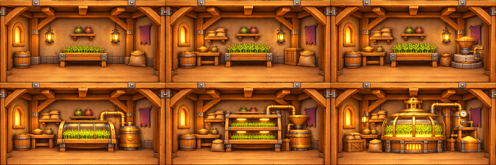
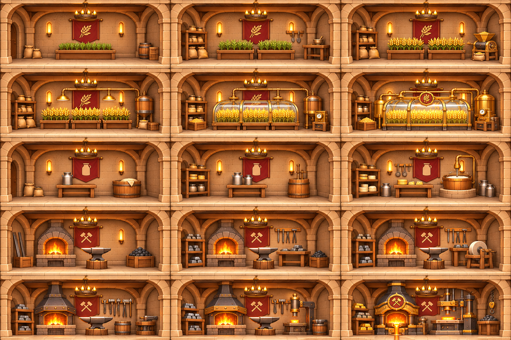
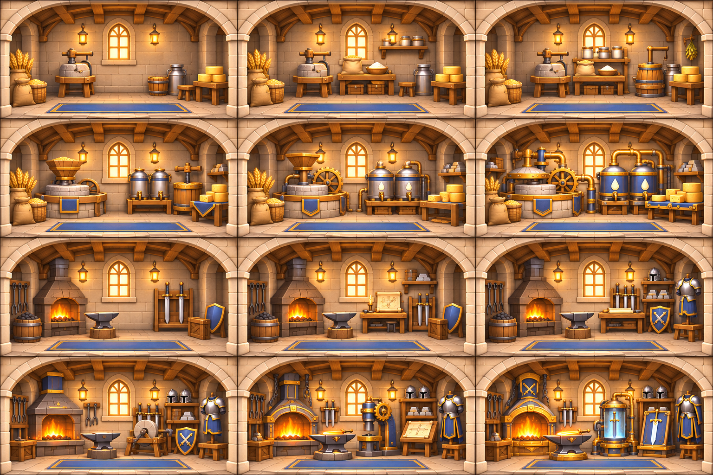
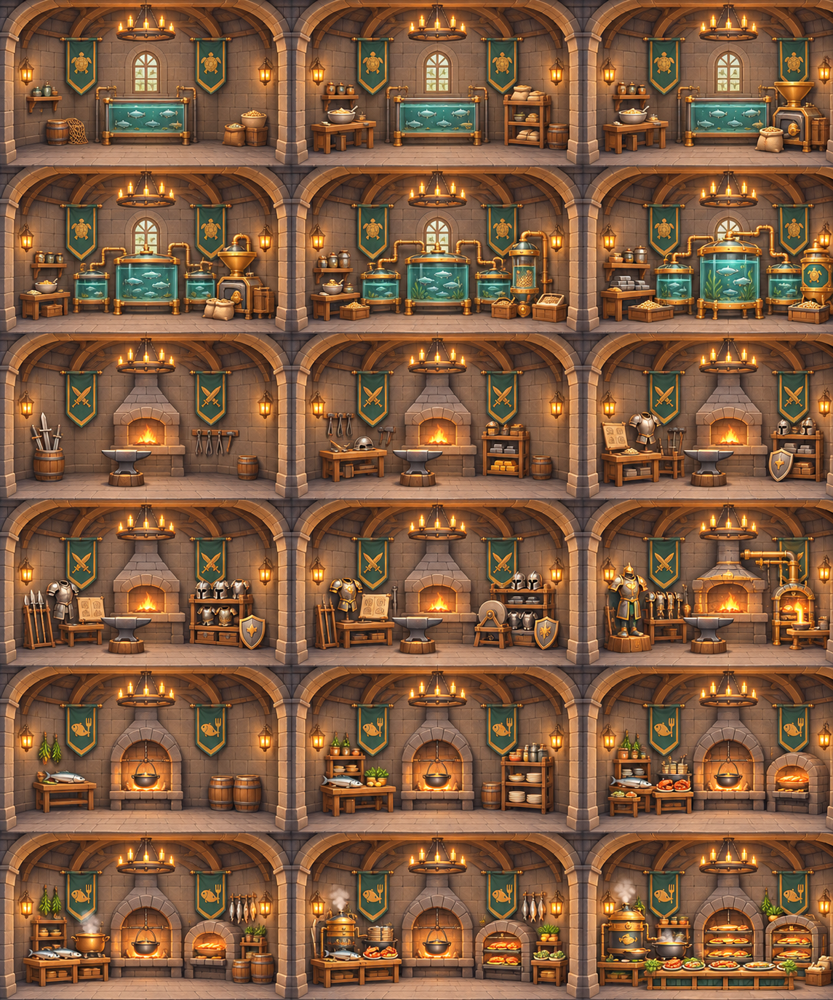
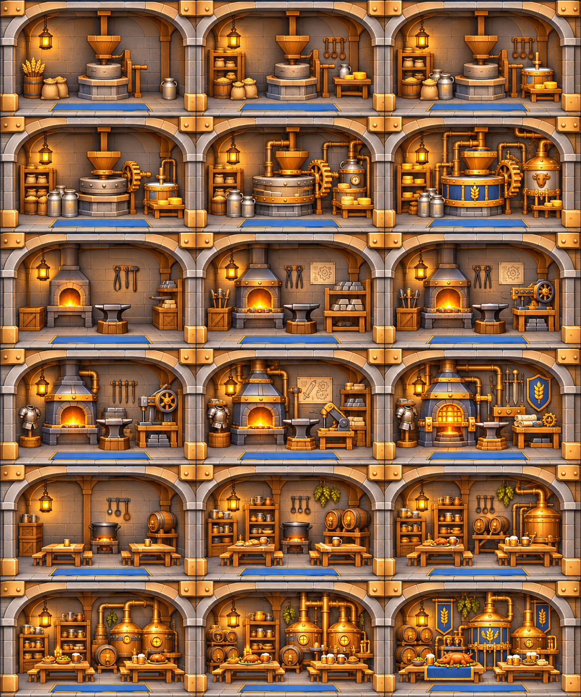
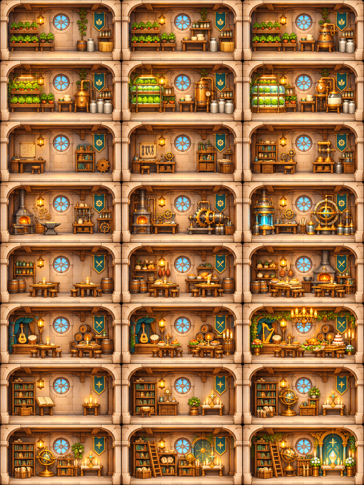
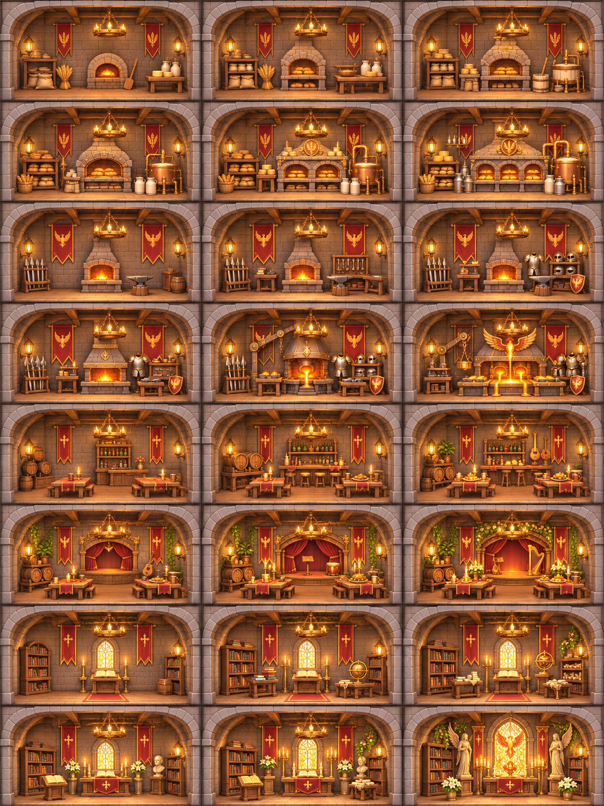
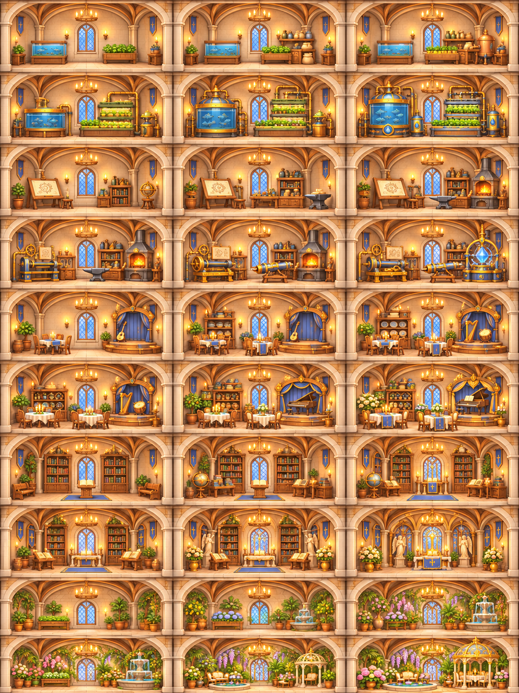
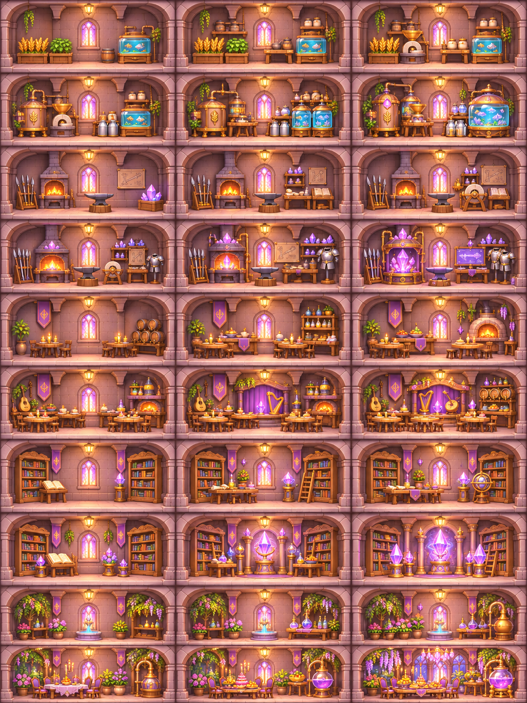
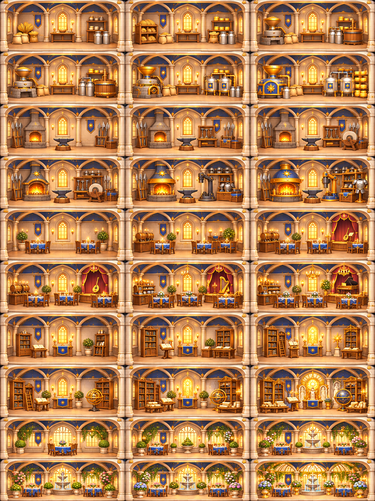

성별 기능성 방 · 기본 + 5단계 업그레이드
기존 성·방 위치와 크기 유지. 생산 / 장비 연구 / 식음료·공연 / 도서·종교 / 왕실 특화. 아래는 실제 게임 캡처입니다.
1. 목재 개척 농장
생성 원본 · 1개 방 × 6단계

2. 사암 보급 요새
생성 원본 · 2개 방 × 6단계

3. 백석 기사단
생성 원본 · 2개 방 × 6단계

4. 비취 수산 요새
생성 원본 · 3개 방 × 6단계

5. 강철 공업 요새
생성 원본 · 3개 방 × 6단계

6. 청록 공학 성
생성 원본 · 4개 방 × 6단계

7. 붉은 봉황 성
생성 원본 · 4개 방 × 6단계

8. 백조 학술 궁전
생성 원본 · 5개 방 × 6단계

9. 수정 마법 성
생성 원본 · 5개 방 × 6단계

10. 태양 왕실 궁전
생성 원본 · 5개 방 × 6단계
